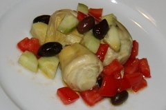

Food talk
 Nema nikakve dileme da nam se Jamie Oliver svima popeo na glavu. Takodje nema nikakve dileme da, generalno, svest ljudi o tome sta i kako jedu nikada nije bila razvijenija. Uzroke i jedne i druge pojave treba traziti u opstim promenama izazvanim ubrzanom globalizacijom i sve agresivnijom borbom na trzistu.
Nema nikakve dileme da nam se Jamie Oliver svima popeo na glavu. Takodje nema nikakve dileme da, generalno, svest ljudi o tome sta i kako jedu nikada nije bila razvijenija. Uzroke i jedne i druge pojave treba traziti u opstim promenama izazvanim ubrzanom globalizacijom i sve agresivnijom borbom na trzistu.
Logisticki posmatrano, ne postoji vise ni jedan razlog da brazilska govedina ne konkurise na evropskom trzistu, niti da izvorni terijaki sos ne bude podjednako dostupan u evropskim, americkim i azijskim prodavnicama. Ponuda je, dakle, nova i globalna - nikad sarenija- sve je dostupno, samo valja izabrati.
Informaticka revolucija, pak, lisila nas je osecaja da ne znamo sta bi sa nekom namirnicom koju do sada nismo upotrebljavali. Dovoljno je ukucati je u Google i kao rezultat dobicete spisak recepata za cije isprobavanje bi vam trebalo 42 zivota pod uslovom da ne jedete nista drugo.
 Mozda se u ovoj cinjenici i krije razlog zasto je vecina ljudi sa kojima sam razgovarao u poslednje vreme o ovoj temi potpuno prezasicena gastro pricom/ponudom, kao i besomucnim (pre svega TV)promovisanjem Food talk-a. Ipak, niko od njih jos uvek nije izgubio apetit zbog toga.
Mozda se u ovoj cinjenici i krije razlog zasto je vecina ljudi sa kojima sam razgovarao u poslednje vreme o ovoj temi potpuno prezasicena gastro pricom/ponudom, kao i besomucnim (pre svega TV)promovisanjem Food talk-a. Ipak, niko od njih jos uvek nije izgubio apetit zbog toga.
Ogroman izbor (sto je uvek dobra stvar), omogucava da uz malo vestine uskladimo ishranu sa nacinom zivota, menjajuci stare, generalno lose, navike. Naravno da ovde ne mislim na povremeni podvarak, pasulj prebranac, punjene paprike ili musaku, ali je cinjenica da prosta rekombinacija "tradicionalnih" recepata vodi do zacepljenja krvnih sudova, povisenog pritiska, infarkta, respektivno... Caka i jeste u promeni navika, za pocetak prelazak sa masti na "zejtin", zatim sa "zejtina" na maslinovo (i druga hladno cedjena) ulje; uvodjenje ribe u jelovnik i njen prelazak iz obredno-obicajne (tipicno Veliki Petak ili slava) kategorije u kategoriju obicne, svakodnevne ishrane.
Naravno, povezanost promena zivotnog stila i promena navika vezanih za ishranu je dvosmerno uzrocno-posledicna, jedno bez drugog je nemoguce. Super je pozitivan naboj energije kojim ce vas, nakon par meseci, nagraditi dosledna upotreba svezeg povrca, voca i zitarica. Kroz vise opseznih istrazivanja nedvosmisleno je dokazano da je najpouzdaniji lek protiv depresije i loseg raspolozenja povecanje nivoa unosa nezasicenih Omega3 masti, na primer.
Sveze namirnice (voce, povrce, zitarice) uz minimalnu termicku obradu (ko jos ima tri i po sata za pripremu rucka???), uz kvalitetna ulja i mesa okvir su u kome se krecu recepti za nesto sto bi se moglo nazvati zdrava ishrana. Navike su, naravno, u osnovi svega. Kada je hrana u pitanju, a budzet ogranicavajuci faktor, uvek je pametnije opredeliti se za kvalitet nego za kvantitet.
 Spremanje hrane moze i treba da bude i zabavno. Zezanje sa bojama, eksperimentisanje sa raznim kombinacijama ukusa moze od onoga sto se pre smatralo "robijom", vremena provedenog u kuhinji, da napravi sasvim opustajuce i veselo iskustvo. Nas mali doprinos u ovom smeru bice galerija recepata, gde ce se pojavljivati predlozi, ideje, saveti... idealno, postace to otvoreno mesto, gde ce se pojavljivati i vasi recepti, mesto zivo, za razmenu najsarenijih informacija: od gastro iskustava, do konkretnih informacija o tome u kojoj mesari je najsvezija butkica ili na kojoj pijaci je najbolji spanac, krompir, celer, na primer. Mi smo tako zamislili, na vama je da tako i bude.
Spremanje hrane moze i treba da bude i zabavno. Zezanje sa bojama, eksperimentisanje sa raznim kombinacijama ukusa moze od onoga sto se pre smatralo "robijom", vremena provedenog u kuhinji, da napravi sasvim opustajuce i veselo iskustvo. Nas mali doprinos u ovom smeru bice galerija recepata, gde ce se pojavljivati predlozi, ideje, saveti... idealno, postace to otvoreno mesto, gde ce se pojavljivati i vasi recepti, mesto zivo, za razmenu najsarenijih informacija: od gastro iskustava, do konkretnih informacija o tome u kojoj mesari je najsvezija butkica ili na kojoj pijaci je najbolji spanac, krompir, celer, na primer. Mi smo tako zamislili, na vama je da tako i bude.
Komentari
bravo za galeriju recepata
tekton | 07.11.06 11:13
bravo za tekst! i da, ovo s articokama, pisi recepat!
 yello | 07.11.06 11:44
yello | 07.11.06 11:44
Zna se da je najsvezije i najlepse meso kod komsije Marka (jeste malo jaci na cenama, ali ne uvaljuje skart). Subotom ujutru na vrh vitrine obično osvane kavurma, pihtijice ili čvarčići (može jednom nedeljno koji zalogaj, a?), domaća radinost.
 Ljube | 07.11.06 12:25
Ljube | 07.11.06 12:25
pobogu kao riba da bude normalna!?!?! pa sta cemo onda da jedemo za post? :))
 imejl99 | 07.11.06 13:19
imejl99 | 07.11.06 13:19
E ja imam problem sa tim "imanjem izbora". Ali u svemu pa i u hrani. To mega market, kupovina namirnica, pretvori se u ok zabavu (vozikam se ja tu kolicima, slusam mjuz, ne idem tamo gladna i bla bla), ali što je mnogo, mnogo je. I ovo bi, a i ono bi, a i onaj dimljeni sir a možda čak i ovaj...a što ne bi vako, a što ne bi nako...i dođem sa ne znam ni ja čim, što se sprema ne znam ni ja kako :))
Nego, ima zanimljvih teorija o hrani, da je najpogodnije da se jede ono što uspeva u onim krajevima u kojima živiš, jer se priroda lepo pobrinula da ti obezbedi one plodove koji su tu, baš tu neophodni. E da, to bi bilo krasno da nismo sj....ovo planete.
Ali to je po teoriji :) Ipak volim nešto i van teorije.
Galerija je super!
I da. Nikako, ali nikako one recepte od tri i po sata spremanja. To boli!
etotako | 07.11.06 18:03
mmmm tart sa brokolijem i paradajzom! mmmmmmm! mmmmmm Ja sam sada tako glaaadna! eh)))
redsandra | 08.11.06 10:52
@jelo, lalara: Salata je sa articokom, crnim maslinama, paradajizom... jednostavna kombinacija, malo belog bibera i maslinovog ulja preko. e,da, i krastavac :)
kiko | 08.11.06 11:32
Ja sam pravila taj tart sa brokolijem i paradajzom, bio je bas osvezavajuci
La Lara | 08.11.06 11:57
Podseća me ovaj post na "Klopa, piće, čovek, žena". Odgledaj ako nisi, stvarno je odličan! :)
 ubipacijentic | 08.11.06 16:59
ubipacijentic | 08.11.06 16:59
@UBI: uh, nekako mi je promakao taj film - hvala za podsecanje, stavljen na listu prioriteta ;)
Nego, kako je prosao onaj Colemanov koncert?
kiko | 09.11.06 08:58
Uh, Coleman... :) Sjajno. Ne mogu ti reći koliko smo uživali, bili smo kao hipnotisani njegovim 'kružnim' aranžmanima (svirao je samo dve kompozicije, zapravo mešavine više njegovih stvari, tokom dva sata). Ono je BAŠ progresivno, vidi se da je čovek iz NYC, ne iz nekog sela. ,)U bendu ima žensku koja koristi glas kao instrument, skatuje sve vreme, i to zvuči odlično - mnogo bolje nego što bi pomislio kad ti neko kaže. Ja sam bukvalno deset dana posle koncerta bio naježen i pevušio 'Flint' sve vreme, evo i sad se naježim kad pomislim. Mnogo dobro. :)
 RSS feed
RSS feed
 sadržaji se objavljuju pod
sadržaji se objavljuju pod
O ovome sa crvenim kockicama i crnim maslinama, ili sta je, jos nismo citali, cini mi se
La Lara | 07.11.06 10:43